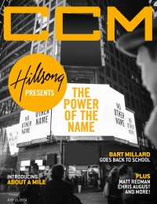

CCM Digital
15 Jul 2014
| Cover |
|---|
|  |
 Online Exclusively Online Exclusively |
| Writers in this Issue |
| Argyrakis, Andy Aspinwall, Grace S. Conner, Matt Greer, Andrew Lusk, Caroline Millard, Bart Saraco, Bert Sparks, Billy |
Hillsong
Cover Feature:- "Hillsong Presents The Power of The Name" by Caroline Lusk
- "Band of Brotherhood" by Billy Sparks
- "Wide Awake" by Matt Conner
- "From The Voice to BEC, His Talent Is Crystal Clear" by Matt Conner
- "Where The Arts Meets Theology: A New Take On Worship Education" by Bart Millard
- "You Only Live Twice" by Caroline Lusk
- Rush of Fools - Carry Us Now by Grace S. Aspinwall
- The Martins - A Cappella by Andrew Greer
- All Sons and Daughters - All Sons & Daughters by Grace S. Aspinwall
- Robin Mark - Liberation Praise by Grace S. Aspinwall
- The Choir - Shadow Weaver by Bert Saraco
- Wolves at the Gate - VxV by Matt Conner
- Melanie Penn - Hope Tonight by Matt Conner
- Mike Lee - Awakening Hearts by Bert Saraco
- Da' T.R.U.T.H. - Heartbeat by Andrew Greer
- Aretha Franklin - The Queen of Soul by Andy Argyrakis
- various artists - The Legend of George Jones by Andy Argyrakis
- Rosanne Cash - The River & The Thread by Andy Argyrakis
- "Metropolis Performing Arts Centre, Arlington Heights, IL" by Andy Argyrakis
- "Finding Mercy" by Caroline Lusk
© 2011 CMnexus. Last updated May 2025. Contact: editor -AT- cmnexus -DØT- org